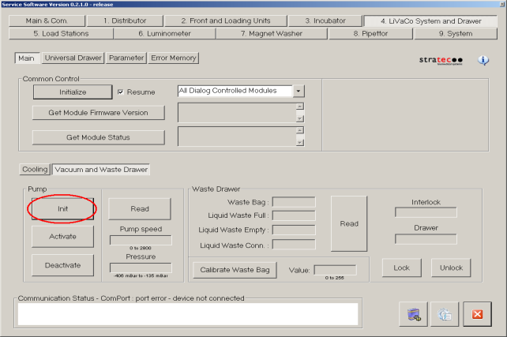
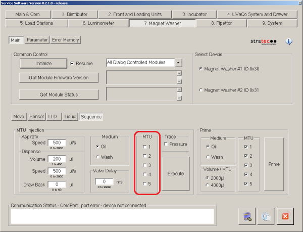
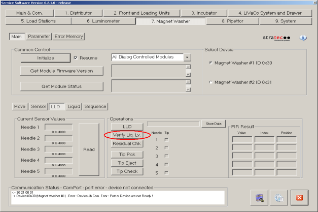
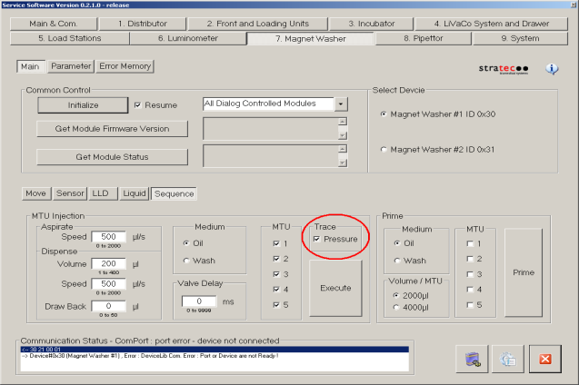
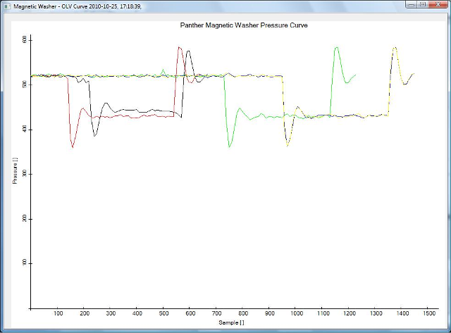
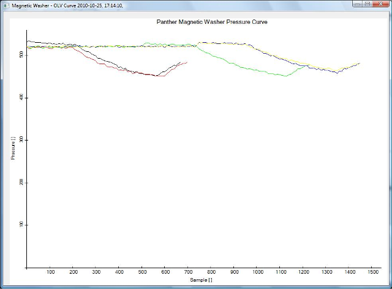

Magnetic Wash Dispense and Process Control Verification
- Verify that MTUs are present and perform a system prime (see the Panther System Operator's Manual).
- During the prime sequence, for the first MTUs, monitor the bleach and buffer lines to confirm that no leaks are present at the connections, pumps, and/or valves.
- Monitor the Output Queue as it dispenses fluid into the tube.
Confirm each tube is receiving the same amount of fluid and that the module is placing the MTUs onto its stack properly and consistently.
Magnetic Wash Module Visual Dispense Verification

|
Note— Screenshots below are for reference ONLY |
- Start up Service Software.
 Ensure that the vacuum system is Initialized and Activated.
Ensure that the vacuum system is Initialized and Activated.
- Ensure that the Mag Wash(es) are primed.
If any fluid fittings have been loosened it will be necessary to prime.
To prime a Mag Wash: - Navigate to the Distributor tab and insert a new MTU into the Magnetic Wash module.
- In the Move section under 7 Magnet Washer tab in Service Software press Pick Up to pick tiplets.
An error will be reported if any tips are missing or unable to be picked.
Then press Aspirate to seat the tiplets onto the aspirator.
Be sure to have the correct MagWash selected. - In the Sequence section under 7 Magnet Washer tab, inject 1000 µL of wash buffer.
Make sure to check all 5 tubes of the MTU.
Be sure that you have selected the appropriate Mag Wash device (#1 or #2).
- In the LLD section under 7 Magnet Washer, press the Verify Liq. Lv. button to perform a dispense verification check.
This button uses the capacitive liquid level detection sensor to verify that 800 to 1200 μl of wash solution are in the MTU tubes.
It will conclude by aspirating all the fluid out of the MTU.
If an error is reported check for fluid leaks, re-prime the system and try again.
Also, check the vacuum lines while the MTU is being aspirated – if the fluid in one or more of the lines is moving significantly slower than the fluid in adjacent lines this may be an indication of a partially clogged aspirator.
- With all the fluid in the MTU aspirated press the Residual Chk. button, also in the LLD section underneath the Verify Liq. Lv. button. This will perform a residual fluid detection.
An error will be reported if it finds more that 50 μl of fluid in any tube of the MTU.
If an error is reported check if any aspirators are clogged, check if the vacuum pressure is in a normal range and check for any leaks at any fluid fittings. - In the Sequence section under 7 Magnet Washer tab, inject 100 µL of oil (at speed=500 μl/s).
Turn the Pressure Trace checkmark on. Make sure to check all 5 tubes of the MTU.
Be sure that you have selected the appropriate Mag Wash device (#1 or #2).
Screenshot below is for reference ONLY.Note—If unable to edit the amount of wash buffer in System SW 5.x and 6.x, check no more than two checkboxes of the MTU at one time. 
- Examine the resulting series of waveforms.
A proper waveform should resemble a square wave sinusoidal transients at the beginning and the end of the dispense pulse.
The bottom part of the square wave should be approximately between 350 and 450.

 button at the top of the page to send feedback, comments, or change requests.
button at the top of the page to send feedback, comments, or change requests.